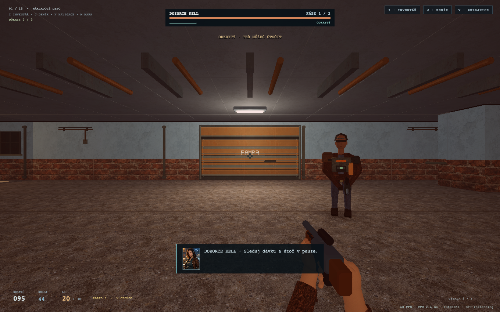

Česky · English
HAVRAN
Z podzemí přišel signál se jménem tvého mrtvého bratra. Sestup do komplexu Vektor, najdi důkazy a dostaň přeživší ven. Česká 3D střílečka s patnácti misemi a pohyblivými bossy.
Počítač s WebGL, klávesnice a myš. Rozbalenou hru můžeš hrát i offline.

Stáhni celou kampaň
ZIP obsahuje obě varianty. Rozbal jej, otevři index.html a vyber si vykreslování.
První mise
Začínáš s nožem. Poraz první stráž a její pistoli seber přes E. Najdi tři důkazy, použij terminál a vstup do arény. Po vítězství nad bossem projdi zeleným východem.
Ovládání
- WASD / myš
- Pohyb a rozhlížení
- Klik / R
- Útok a přebití
- E / I
- Sebrat nebo použít, inventář
- Shift / skok
- Sprint, skok mezerníkem
- B / N
- Baterka, volitelná pomoc s cestou
- V / J / Esc
- Zbrojnice, deník, pauza a nastavení
- 0 / kolečko
- Nůž, přepínání získaných zbraní
Jak jsem hru vytvořil s AI
Zadával jsem požadavky, hrál prototyp a vracel konkrétní připomínky. AI implementovala změny a připravovala automatizované testy. V repozitáři zveřejňuji původní zadání, příklady změn podle hraní a výsledky ověření jednotlivých verzí.
Ověřeno pro vydání 5.3
210 automatizovaných UAT případů, 140 regresních scénářů na každou ze dvou variant a 120 krátkých výkonových měření. Na Apple M1 v Edge při 1440 × 900 držely měřené scény hraní přibližně 60 FPS. Zprávy uvádějí konfiguraci i omezení.